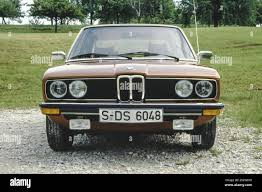
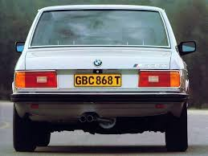
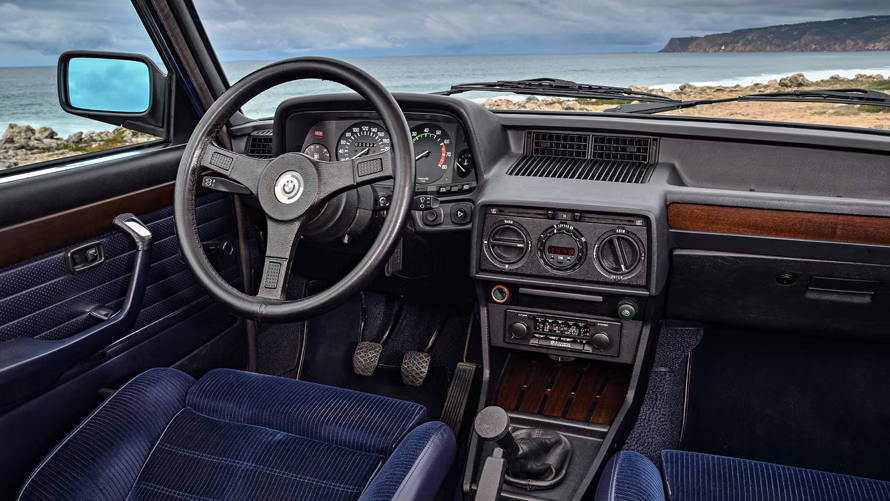

BMW E12
The First Generation of the 5 Series (1972 - 1981)



Car Specifications
- Engine Options: 1.8L Inline-4 to 3.5L Inline-6
- Power: 90 - 218 hp
- Torque: 140 - 310 Nm
- Transmission: 4-speed manual, 5-speed manual, 3-speed automatic
- Top Speed: 185 km/h (115 mph) - 222 km/h (138 mph)
- 0-100 km/h: ~8.1 seconds (M535i)
- Fuel Economy: ~8 - 12 L/100 km
- Production Years: 1972 - 1981
- Body Style: 4-door sedan
- Drive Type: Rear-Wheel Drive
- Weight: 1,200 - 1,500 kg
About the BMW E12
The BMW E12 was the inaugural model of the 5 Series lineup, marking a new chapter in BMW's sedan history. Its elegant design, created by Paul Bracq, and its advanced engineering made it a revolutionary car in its era.
The E12 offered a balance of comfort, luxury, and sportiness, setting the standard for midsize luxury sedans and solidifying BMW's reputation as the "Ultimate Driving Machine."
Image Gallery


Key Features
- Design: Timeless styling by Paul Bracq with clean lines and chrome accents.
- Performance: The high-performance M535i variant featured enhanced handling and power.
- Engineering: Advanced inline-6 engines and innovative suspension for a smooth ride.
Technical Information
The BMW E12 introduced a range of efficient and reliable engines:
Engine Codes and Iterations
- M10: 1.8L and 2.0L Inline-4, used in 518 and 520 models.
- M30: 2.5L to 3.5L Inline-6, used in 525, 528, 530, and 535i models.
- M49: 3.0L Inline-6, used in racing models.
Conclusion
The BMW E12 set the stage for the success of the 5 Series, combining elegance, performance, and innovation. As the first of its kind, it holds a special place in BMW's legacy and remains a cherished classic.